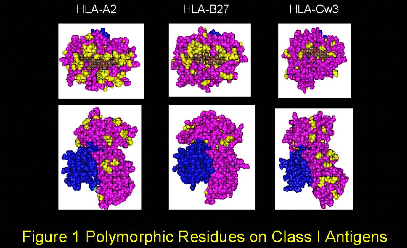
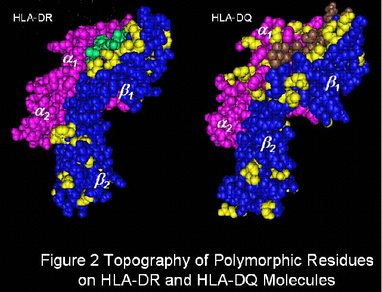
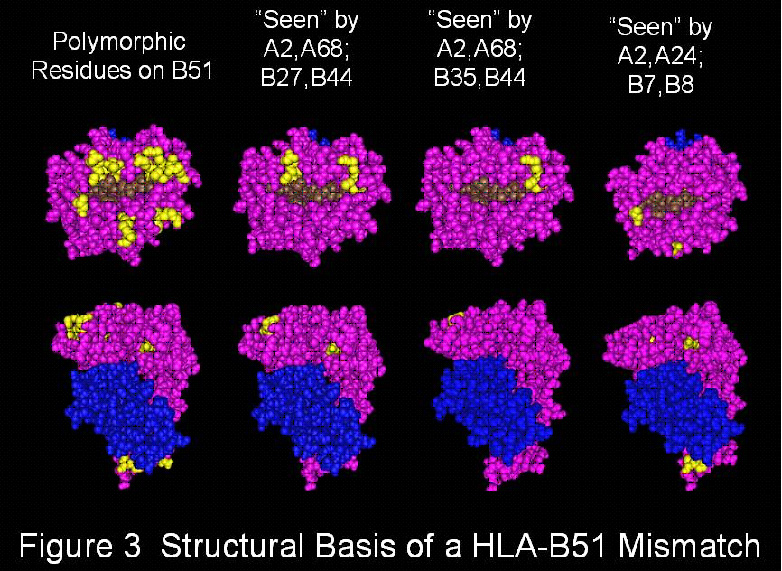

What is structurally based HLA matchmaking?
In organ transplantation, the degree of matching is generally determined by counting the number of mismatched HLA-A, B, DR antigens of the donor. It is well known that the zero-antigen mismatches have the highest success rates but why do so many mismatched transplants do so well? The answer to this question may be related to the fact that antibodies produced against HLA mismatches are significant risk factors for transplant failure.
An important consideration is that HLA antigens have multiple epitopes that can be recognized by specific antibodies. The original description of the epitope repertoire was based on serological cross-reactivity between HLA antigens and antibody specificities against so-called private and public determinants. Elucidation of three-dimensional molecular structures and amino acid sequence differences between HLA antigens has made it possible to define the structural basis of HLA epitopes. The general concept is that HLA epitopes are determined by polymorphic amino acid residues on the molecular surface. Three-dimensional modeling of HLA antigens has revealed many clusters of polymorphic residues. Figures 1 and 2 represent molecular models of class I and class II HLA antigens and many polymorphic residues (shown in yellow) are readily seen on the top and the sides of the molecule. In spite of this highly complex polymorphism it has become possible to determine HLA compatibility at the structural level.

The reason is that the recipient’s own HLA antigens represent the repertoire of self-epitopes to which no antibodies can be made and structurally based compatibility determines for each mismatched HLA antigen, which epitopes in corresponding sequence positions are different. Figure 3 illustrates how a mismatched antigen, in this case HLA-B51, has a different structural epitope pattern for each of the three HLA-A, B phenotypes shown here. For certain HLA phenotypes a given mismatch has no or few mismatched epitopes and for other phenotypes, the same HLA antigen has many mismatched epitopes and is therefore, structurally highly incompatible. Altogether, the degree of structural compatibility of a donor HLA mismatch is largely determined by the HLA type of the recipient.
HLAMatchmaker was originally introduced as a matching algorithm whereby each HLA antigen is viewed as a string of short linear sequences (triplets) involving polymorphic amino acid residues in antibody-accessible positions; they are considered key elements of epitopes that can induce the formation of specific antibodies. The triplet matching concept has clinical relevance because HLA-A,B mismatched kidney transplants that are compatible at the triplet level have practically the same graft survival rates as the zero HLA-A,B antigen mismatches defined by conventional criteria. Triplet matching has been shown to benefit platelet transfusions of refractory thrombocytopenic patients. HLAMatchmaker is also useful in the determination of acceptable mismatches for highly sensitized patients considered for kidney transplantation.
Although the triplet version of HLAMatchmaker has proven to be clinically useful, it provides an incomplete description of the structural HLA epitope repertoire. Expanded criteria must be used including longer sequences and polymorphic residues in discontinuous positions and they should consider the structural basis of antibody-antigen interactions including contact areas and binding energy, the essence of antigenicity. Recent studies based on stereochemical modeling of crystallized complexes of antibodies with different protein antigens have led to an updated version of HLAMatchmaker. It considers the concept that antigenic proteins have functional epitopes consisting of amino acid residues that are about 3 Ångstroms apart from each other and at least one of them is non-self. The term “eplet” is now used to describe patches of polymorphic residues within a radius of 3.0-3.5 Ångstroms. Many eplets are identical to triplets but others have residues in discontinuous sequence positions that cluster together on the molecular surface. Serologically defined HLA determinants correspond well to eplets. The eplet version of HLAMatchmaker represents therefore a more complete repertoire of structurally defined HLA epitopes and provides a more detailed assessment of HLA compatibility.
HLAMatchmaker determines histocompatibility at the epitope rather than antigen level in terms of the humoral alloimmune response. An epitope has two characteristics namely antigenicity, i.e. the reactivity with antibody, and immunogenicity, i.e. the ability of inducing an antibody response. Immunogenicity depends on the structural difference between an immunizing protein and the antibody responder’s homologous proteins. Certain structural differences lead to immunodominant epitopes whereas others are associated with low immunogenicity. A major effort is underway to assess epitope immunogenicity so that clinically useful strategies can be developed on the basis of HLA mismatch permissibility for nonsensitized patients considered for transplantation.
This website has several articles about the concept of structurally based HLA matching and the determination of the triplet and eplet repertoire. There are also many publications from the University of Pittsburgh Medical Center, Leiden University Medical Center in The Netherlands, and several other institutions on the clinical experience with HLAMatchmaker.
The primary goal of this website is to provide HLAMatchmaker programs that can be downloaded free of charge. These Excel-based programs perform structural HLA class I and class II matching at the eplet level and analyze antibody reactivity patterns specific for structurally defined epitopes.